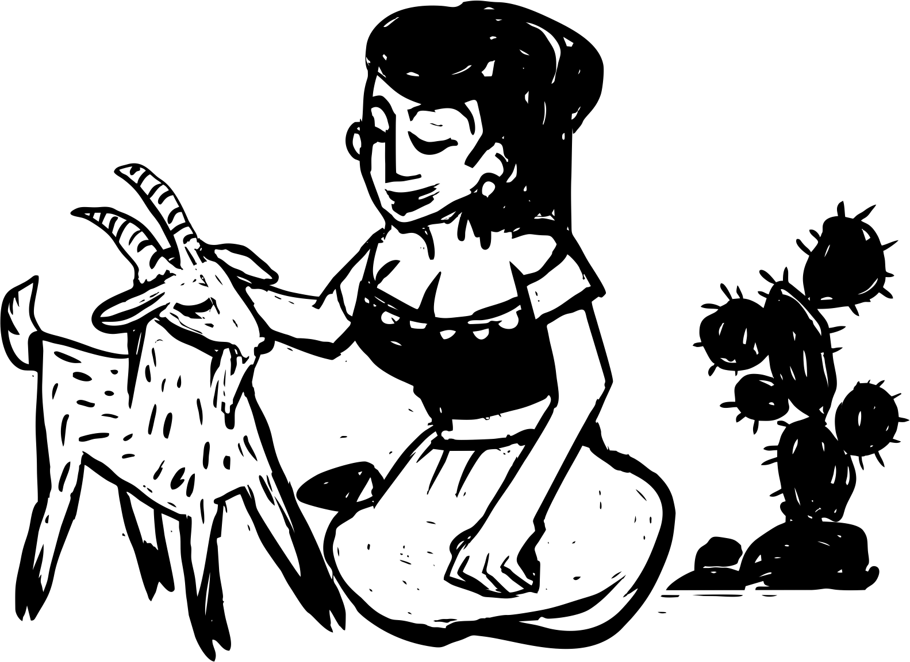

ACERVO DIGITAL · UFPB
As vozes femininas guardadas no cordel.
Vidas, biografias e capas das poetisas que fizeram — e fazem — a literatura de cordel brasileira. Um acervo aberto a todos.
Folheto nº 01 · Cultura popular

Memórias das Poetisas do Cordel
Vidas · Obras · Capas